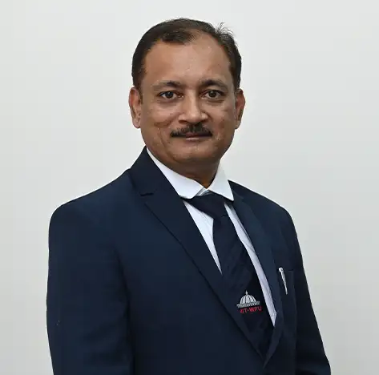
Prof. Deepak Popat Hujare
Professor & Program Director
NVH, Condition Monitoring, FEA, Acoustics and Vibration, System Modelling, Bio Mechanics

Professor & Program Director
NVH, Condition Monitoring, FEA, Acoustics and Vibration, System Modelling, Bio Mechanics
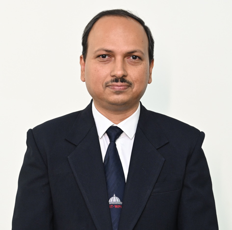
Associate Professor and Program Coordinator (R&A)
Design, Composite Material, Robotics, Mechatronics
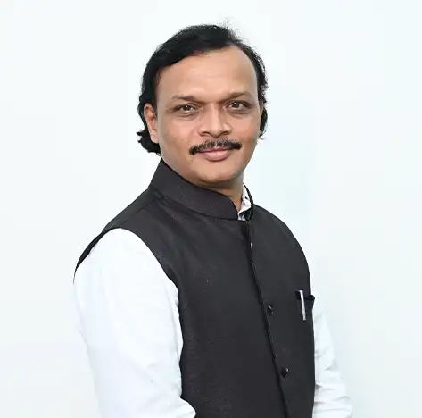
Professor
Material Characterization, Advanced Manufacturing Processes
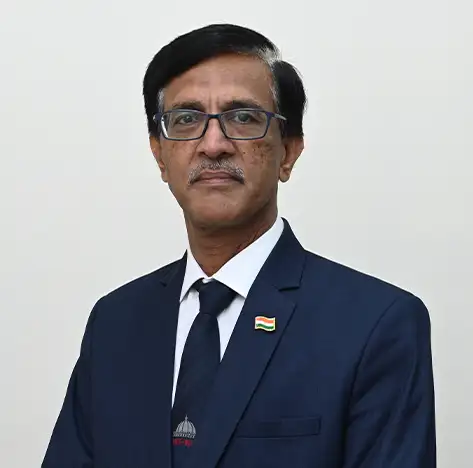
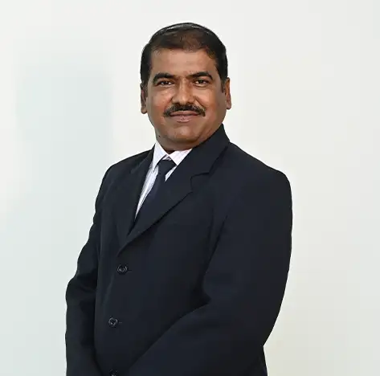
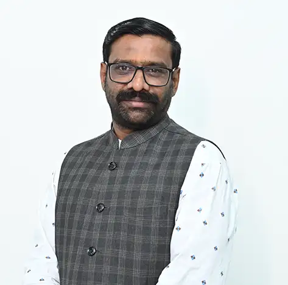
Professor
Heat Exchanger, HVAC, Cryogenic Engineering, Thermal Insulation, Heat Pipe and Heat Transfer Applications......... but not limited to"
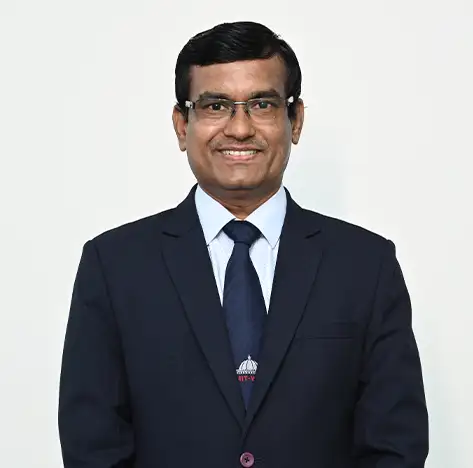
Professor
Dr. Kundlik Mali is a Professor and AHoS in the field of Mechanical Engineering. He earned his Ph.D. in Mechanical Engineering from SPPU Pune in 2014 and completed his M.Tech. from COEP Pune. His expertise lies in the field of Thermal…
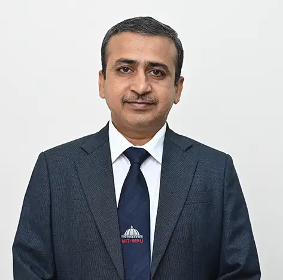
Associate Professor
Engineering Design, Design Thinking, Computational Fluid Dynamics, Tribology
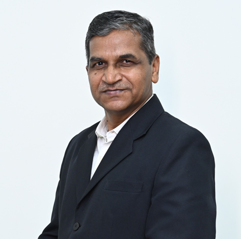
Associate Professor
Additive manufacturing, Vacuum and Investment Casting
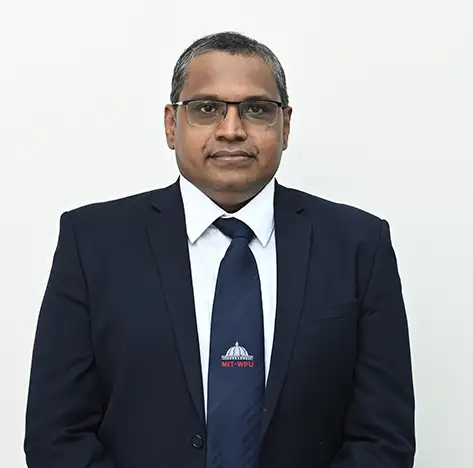
Associate Professor
Nanofluid Heat Transfer, Adsorption Technology, Battery Thermal Management System, Biofuels, Electronic Devices Cooling, Renewable and Sustainable Energy
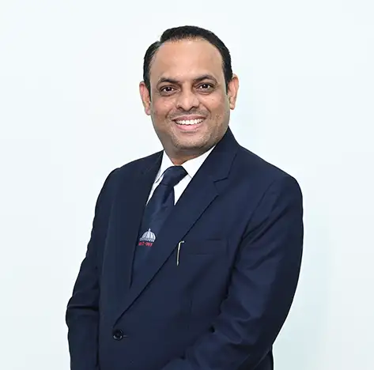
Associate Professor
Bio-mechanical Engineering, Medical Devices, Vibration and Fatigue, FEA
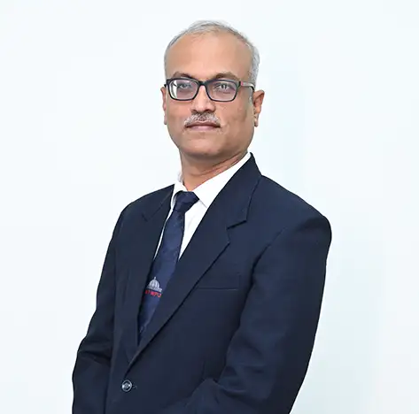
Associate Professor
Al/ML applications in mechanical engineering, Composite materials & structures,Optimization techniques, Design Thinking , Product design
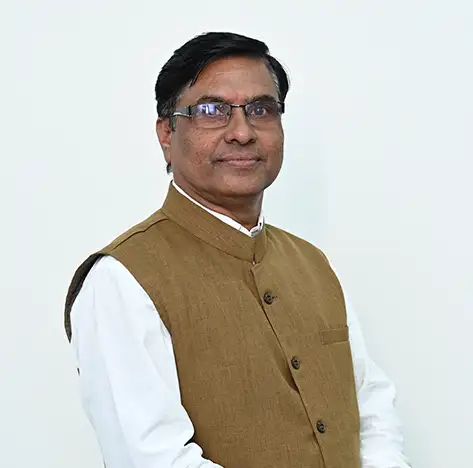
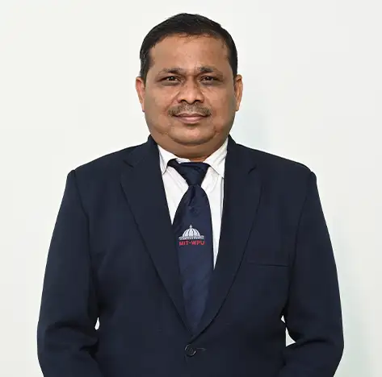
Associate Professor
heat transfer equipments, nanofluidics/nanomaterial, EV (BTMS/Fuel cell),Healthcare ,energy ,Operations research
Assistant Professor
Stress Analysis, Failure Analysis, Corrosion and Wear Analysis, Mechanical Engineering Design, Mechanical Vibrations, Biomechanics, Energy Harvesting, Nano technology
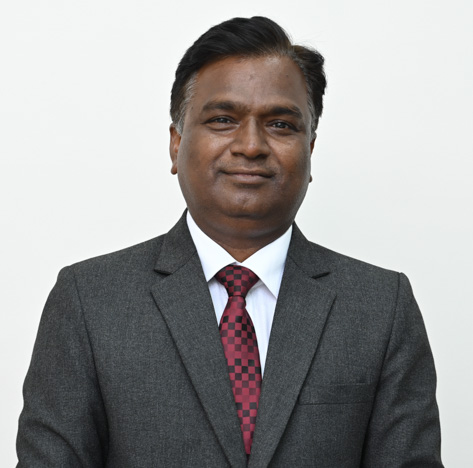
Assistant Professor
It seems like Dr. Barhatte has had a long and varied career at MIT-WPU. He began as a lecturer in 2007, bringing with him a decade of industry experience. Over the years, he has taken on several roles within the Mechanical Engineering…
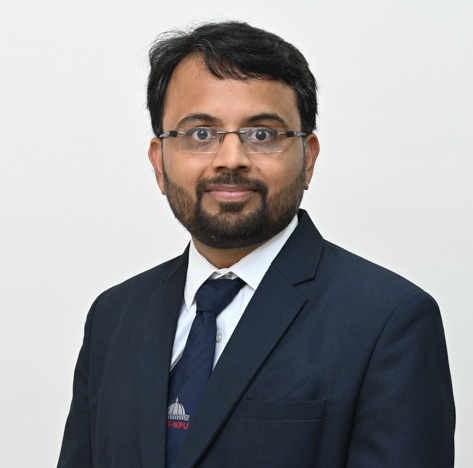
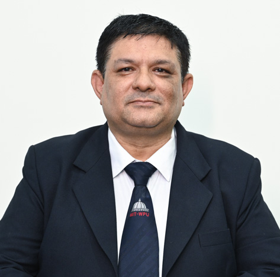
Assistant Professor
Peeling and Fatigue Behavior of Adhesively Joint Different Biopolymers.
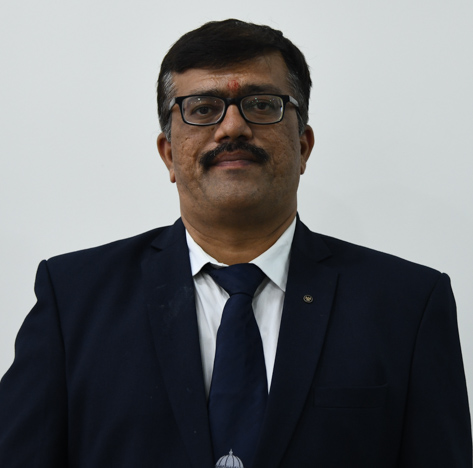
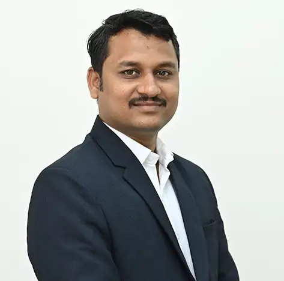
Assistant Professor
"Incremental Sheet Forming, Additive Manufacturing, CAD/CAM, Manufacturing Engineering"
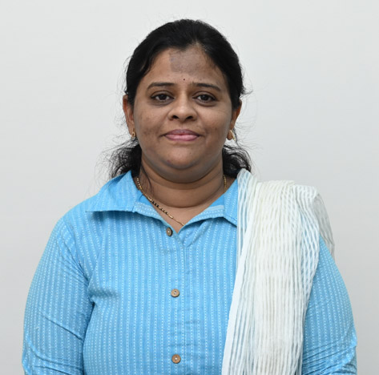
Assistant Professor
Material Science, Additive manufacturing, Engineering Metallurgy
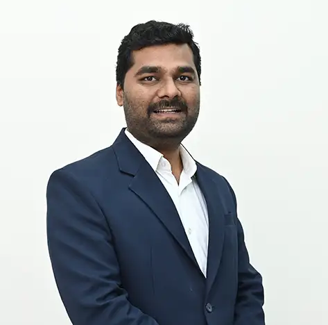
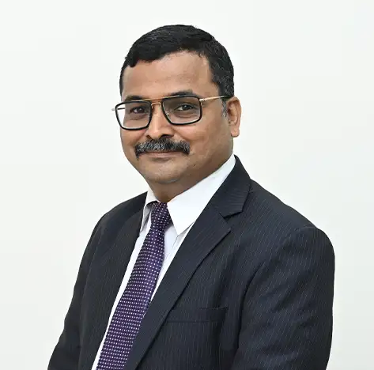
Assistant Professor
Dr. Mahesh Vasantrao Kulkarni is a postgraduate in Mechanical (Design) Engineering and a Doctorate in Mechanical Engineering from Savitribai Phule Pune University. He is currently working as an Assistant Professor in Department of…
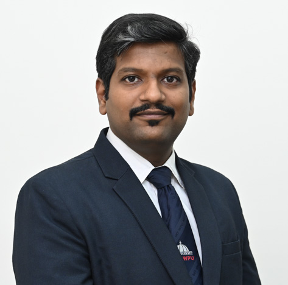
Assistant Professor
Cohort intelligence, Optimization, Nature inspired algorithms, Scocio inspired algorithms
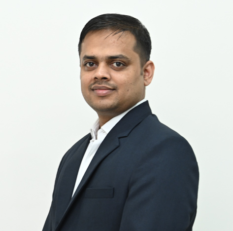
Assistant Professor
Vortex-induced Vibrations, Drag reduction and Flow Control, Fluid-Structure Interaction, Thermal management of systems
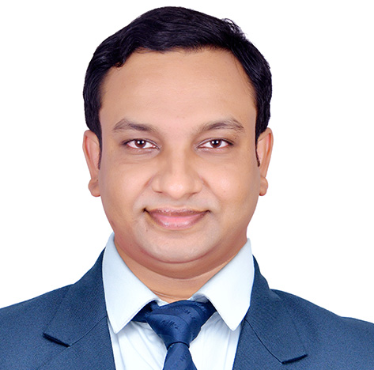
Assistant Professor
Composite Materials, Tribology, Experimental Mechanics, Mechanical Metallurgy
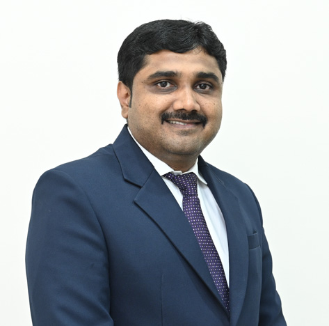
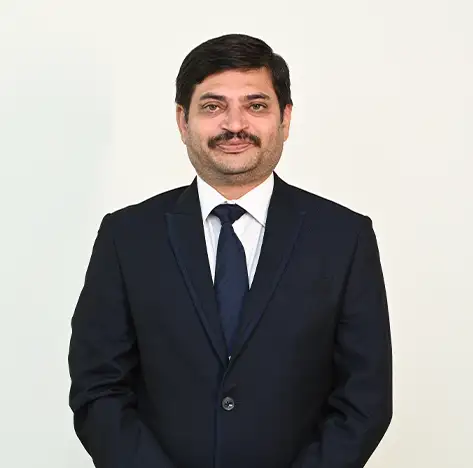
Assistant Professor
1. CAD /CAM/CAE, Numerical Methods, Advance manufacturing, PLM, Design, FEA, Optimization of product, Micro Forming, and Manufacturing process.
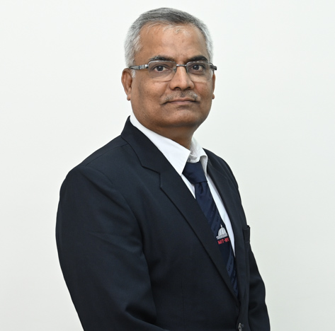
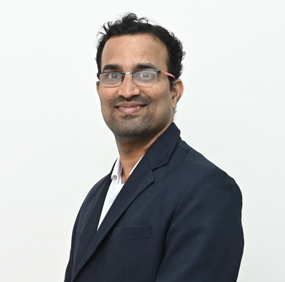
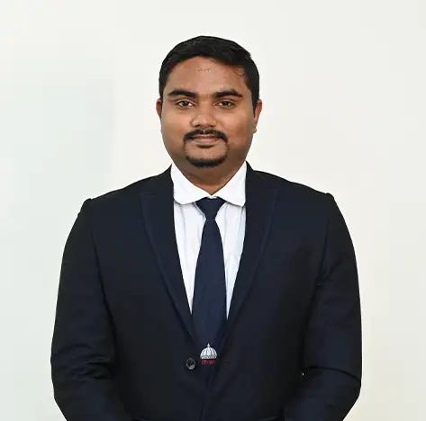
Assistant Professor
Crashworthiness, Impact analysis, Design, Non-linear analysis, FEA
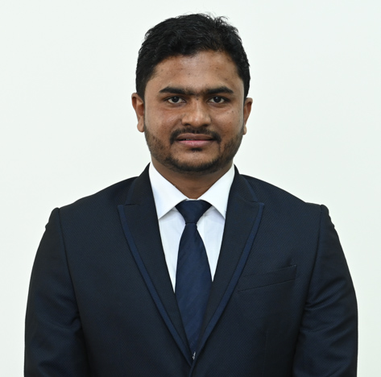
Assistant Professor
Prof. Ashish Pawar is an Assistant Professor in the School of Mechanical Engineering at Dr. Vishwanath Karad MIT World Peace University, Pune. He has 9 years of experience in teaching and research, as well as 1 year of industry experience.…
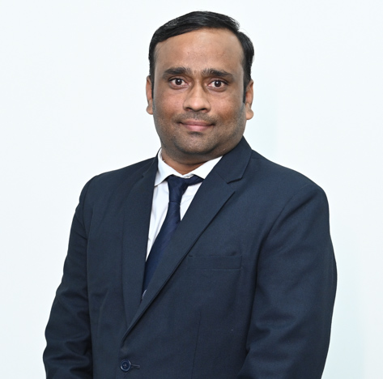
Assistant Professor
Biomaterial, Surface modification of biomaterial, Material science, Materials Characterization, Advanced Manufacturing Processes, Nanocomposites for biomedical applications.
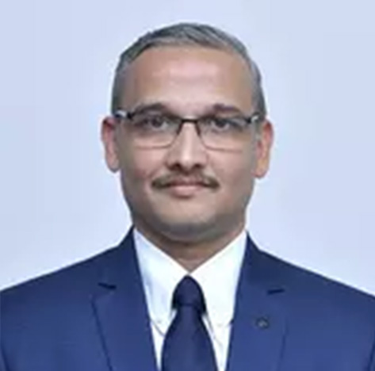
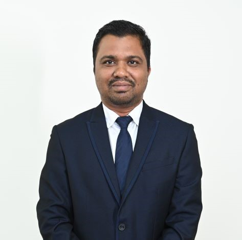
Assistant Professor
Surface Modification, Composite Materials, Solid-state welding
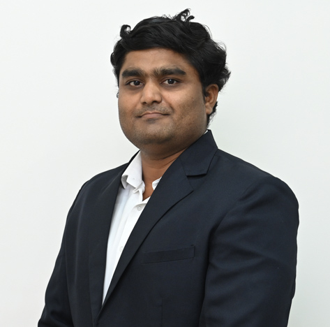
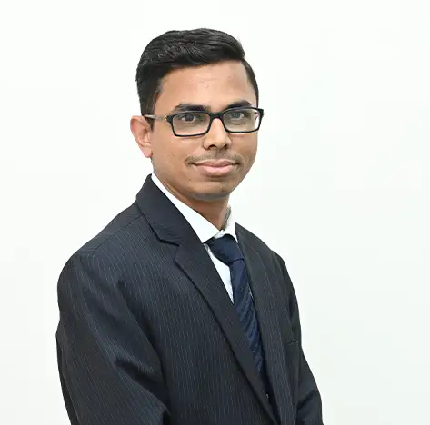
Assistant Professor
Dr. Mitulkumar Thakorbhai Solanki is an Assistant Professor in Department of Mechanical Engineering at MIT World Peace University, Pune. He completed his PhD in Mechanical Engineering from SVNIT Surat with a focus on Bearing Design and…
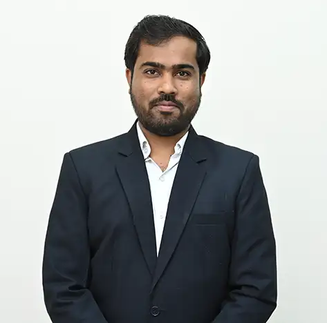
Assistant Professor
Biomedical Engineering, Mechanical Design and Finite Element Analysis
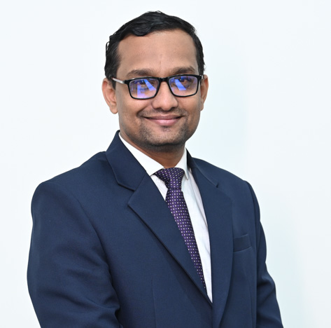
Assistant Professor
Refrigeration and Air Conditioning, Alternative refrigerants, Energy efficiency, Heat Transfer
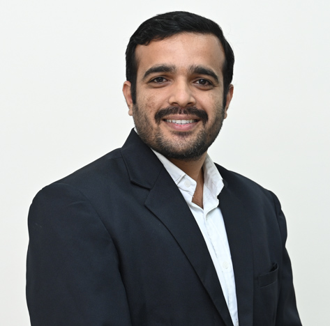